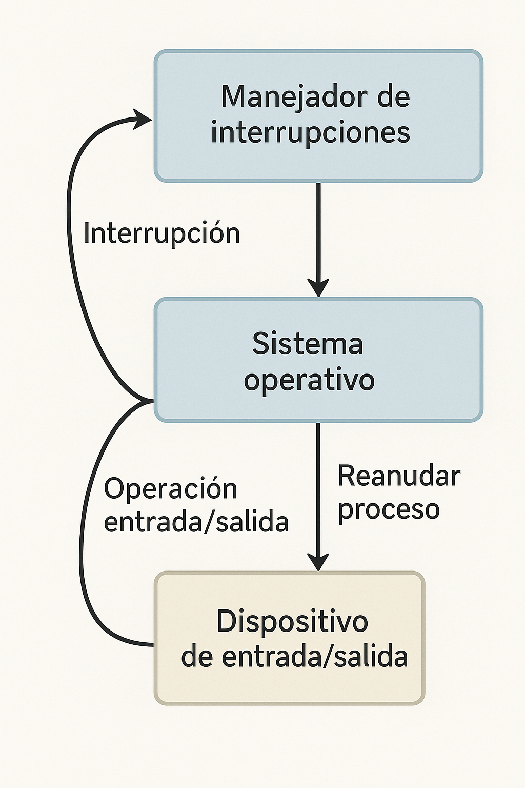

5.3.1 Manejador de Interrupciones
Aunque la E/S programada es útil en algunos casos, en la mayoría de las operaciones se utilizan interrupciones, que son inevitables y deben manejarse de forma eficiente y discreta dentro del sistema operativo.

Fuente: OpenAI. (2025). Imagen generada con Sora [Imagen generada por IA]. https://sora.chatgpt.com/
Manejo básico de interrupciones:
- down en un semáforo
- wait en una variable de condición
- receive de un mensaje
- Desbloquea al controlador (por up, signal o envío de mensaje).
- Permite que el controlador reanude su ejecución.
- Idealmente, los controladores deben funcionar como procesos del kernel con sus propios estados.
Pasos generales del procesamiento de una interrupción:
- Guardar los registros no salvados por el hardware.
- Establecer el contexto del procedimiento de servicio (TLB, MMU, tablas).
- Crear una pila para el procedimiento.
- Reconocer la interrupción o rehabilitarla si no hay controlador centralizado.
- Copiar registros a la tabla de procesos.
- Ejecutar el procedimiento de servicio (leer registros del dispositivo).
- Elegir el siguiente proceso a ejecutar (posible cambio por prioridad).
- Configurar la MMU y el TLB para el nuevo proceso.
- Cargar los registros y el PSW del nuevo proceso.
- Comenzar la ejecución del nuevo proceso.